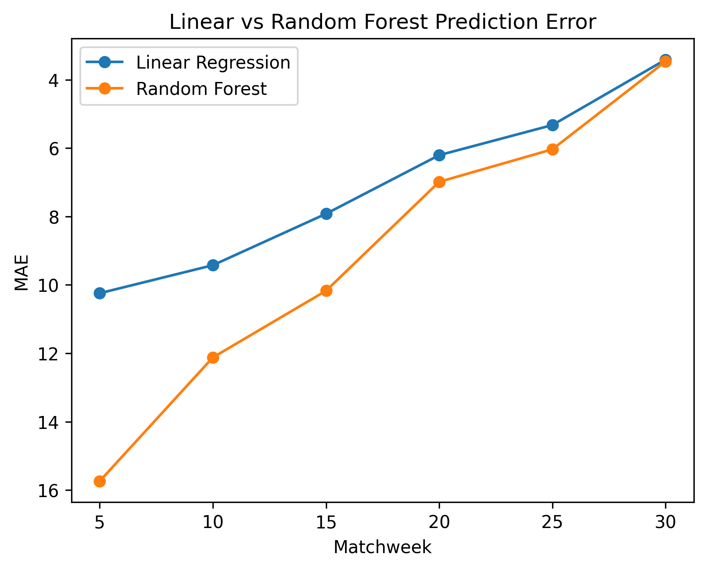

Premier League Forecasting Project
Built a mid-season forecasting system to predict final Premier League points using historical match data.
Results
- Baseline Linear Model: MAE 4.42 · R² 0.891
- Rolling Form Model: MAE 1.24 · R² 0.991
- Prediction error drops as matchweeks increase (MW5 → MW30)
Model Comparison Across Matchweeks
Prediction error (MAE) decreases as the season progresses. Early-season forecasts are unstable, but by Matchweek 25–30 models become significantly more accurate.

Data Leakage (and how I prevented it)
Data leakage happens when a model accidentally uses information from the future while training, which makes performance look unrealistically good.
- Example: If a “last 5 matches” feature includes the current match, the model is indirectly seeing the outcome it’s supposed to predict.
-
Fix: I used a shifted rolling window (
shift()beforerolling()) so the rolling features only use matches that happened before the match being predicted. - Evaluation: I trained on earlier seasons and tested on a later season to avoid “future season” information leaking into training.
What I Did
- Automated EPL data fetching
- Built season-level aggregation tables
- Engineered leakage-safe rolling features (last 5 matches)
- Compared Linear Regression vs Random Forest
- Analyzed prediction stability across matchweeks
Tech Stack
Python, pandas, scikit-learn, matplotlib